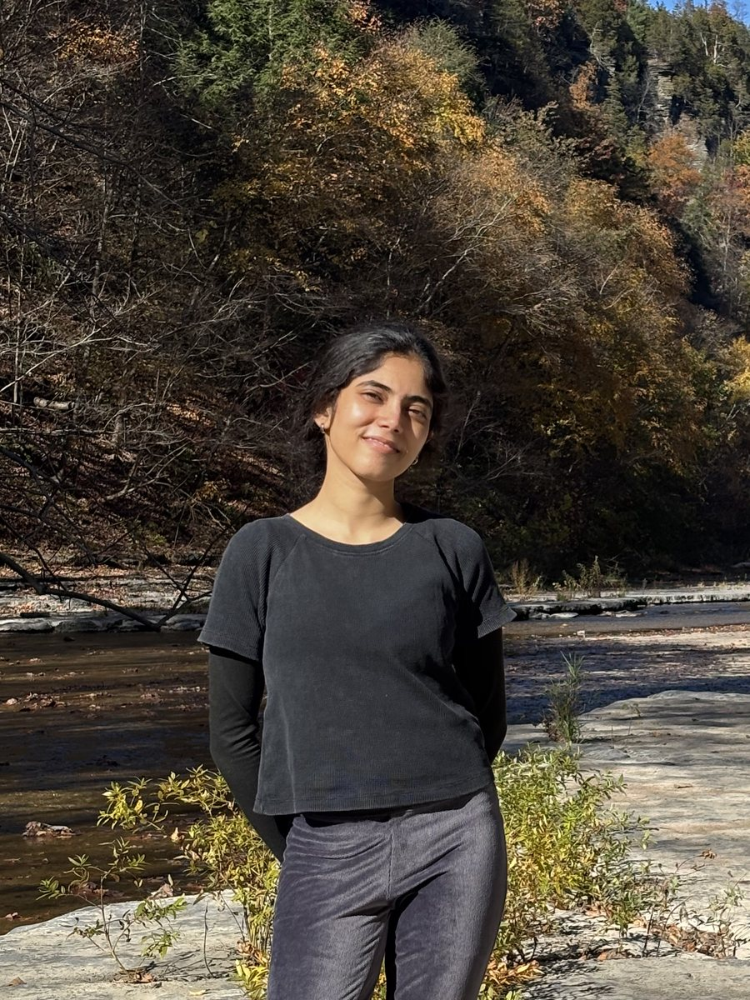

Medha, data analyst who builds the systems behind the numbers
Data Analysis · Analytics Engineering · Research
Hi, I'm Medha. I'm a research-trained data professional who moves between technical and stakeholder-facing work without much friction. Comfortable in a dataset one hour, in front of a state agency's leadership the next. I like owning a problem end-to-end: asking tough questions before the analysis starts, and handing over something my team can actually rely on. Lately I've been leaning into applied AI & data engineering, because the fastest way to actually trust an analysis is to have built the system that fed it.

Where I've worked
Own end-to-end data management across longitudinal and multi-cohort research studies, building the pipeline that standardizes 250K+ survey records and designing research database schemas with field-level validation. Currently leading the data side of a cost-benefit analysis for a statewide autism services initiative, integrating financial data across three partner organizations.
Migrated 20+ years of legacy demographic data into a governed SQL Server system and supported and maintained 38 self-service Tableau dashboards for agency partners. Validated demographic forecasting methodologies against Census baselines to improve population projections used in state agency planning across all 67 PA counties, and sole-authored a published research brief on excess moisture and crop loss.
Supported qualitative and mixed-methods research for the Center for Survey Research, running interviews and focus groups, coding data thematically, and gathering requirements through stakeholder meetings across multiple state-facing studies - including a statewide internal report on collegiate recovery programs delivered to DDAP.
Supported 15+ faculty-led research projects through data cleaning and statistical analysis, and created SQL instructional materials and tutoring sessions that improved student comprehension in core analytics coursework.
Designed, simulated, and tested an S-band microstrip patch antenna using Ansys HFSS, running iterative parametric analysis across design configurations, and conducted comparative analysis across 10+ defense technologies for R&D prioritization.
Education
Contact
Based in Pennsylvania · open to relocating, hybrid, or remote